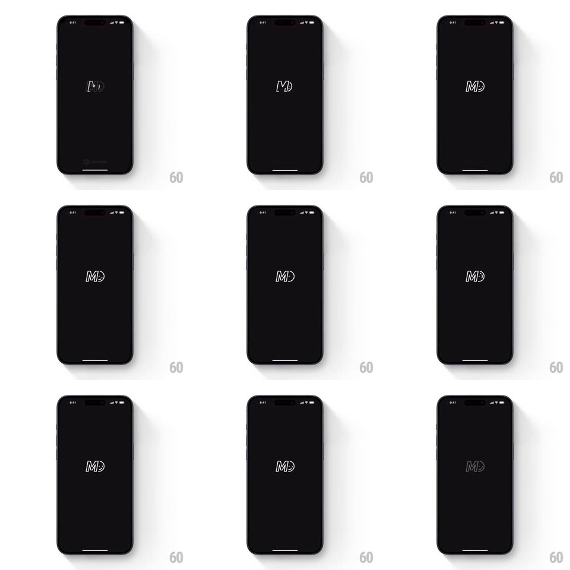

Media
Frame-by-frame

Rebuild this animation 1:1: MD Vinyl's splash - the vinyl-styled "MD" monogram spins like a record on the black launch screen before the app opens.

Rebuild this animation 1:1: MD Vinyl's splash - the vinyl-styled "MD" monogram spins like a record on the black launch screen before the app opens. ## Integration Integration: stack-agnostic spec - springs given as stiffness/damping, timed motions as duration + curve; map every value to your framework and animation library of choice. ## Scene Black launch screen: a thin white "MD" monogram drawn as a vinyl disc (the letterforms merging into a record outline) centered, a small "MD STUDIO" credit at the bottom. ## Motion spec Pattern: spinning logo splash, ~1.2s. - Intro: the monogram fades in (250ms) at a slight tilt. - Spin: it rotates continuously (one revolution per 900ms, linear) with a subtle scale breathing (1 -> 1.03, 1.8s). - The disc's light reflection sweeps as it spins - a faint highlight arc traveling with the rotation. - Exit: the spin decelerates (300ms, ease-out) as the logo scales up slightly and crossfades into the app (300ms). ## Calibration - The rotation is perfectly centered - no wobble or drift. - One flat white stroke on black; the only light play is the sweeping highlight. ## Reduced motion The monogram fades in and out without spinning. ## Don't miss - The letterforms are the record - grooves read through the strokes. - The spin is smooth and constant until the exit deceleration.